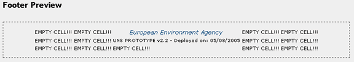
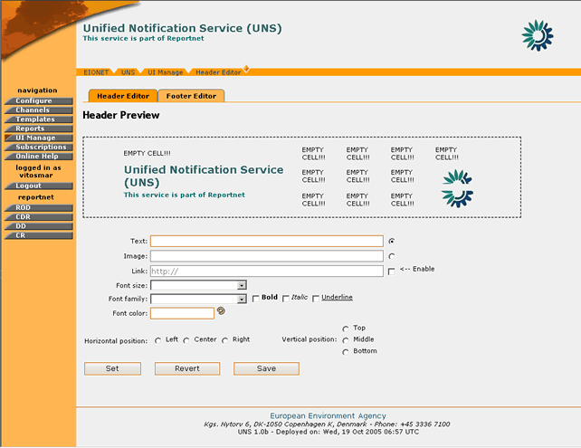
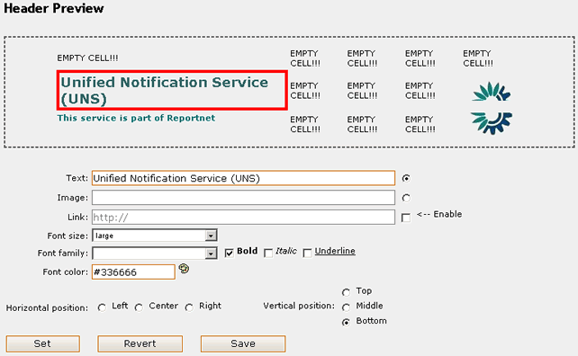
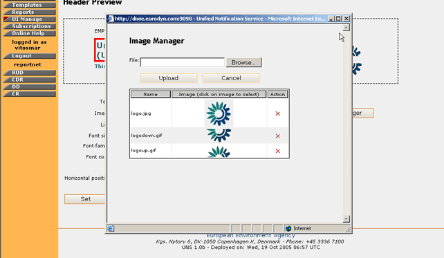

Through the UI management toolkit the administrator will have the ability to change some elements of the user interface. These elements are:
The administrator can change the content of these UI elements by adding/removing images, text and/or hyperlinks. The layout and positioning of this content is controlled via a matrix 5x3. This matrix represents the available area for the header/footer. This area is divided in cells and each cell, may be used as a container for the information the user wants to display.

Figure 15: Footer template matrix
For more details on how to add/edit content in the header/footer, please see section 4.5.2
In order to edit the content of the Header/Footer, you must be logged in as UNS Administrator.
If you have administrator privileges, then the following steps must be followed:
STEP 1 – Login
If you are not already logged in, see: Authenticate User Account.
STEP 2 – Click on “UI Manage” button on the navigation bar.
From here you will be able to select which one of the Header/Footer you wish to edit by clicking the appropriate tag buttons.

Figure 16: Header Management page
STEP 3 – Select and Edit Matrix Cell
Once clicked on the desired tab, the Header/Footer preview page will be displayed. This consists of the Preview Matrix, the different types of input fields (plain text, image, hyperlink) and the formatting options.
In order for the user to perform a change on the UI, a matrix cell must be selected. This is done by performing a mouse click on the matrix. The indicated cell will be denoted then with a red rectangle around it.

Figure 17: Matrix cell selection
As soon as this is done, the user may enter the text, image, hyperlink to be added on the header/footer and add any further formatting using the available tools.
In the case of a link, the user has to enter the text to appear on the UI and set the URL by ticking the “Enable” button.
In the case of an image, the user has to select the Image link radio box and either enter the URL of an external image, or select one from the Image Manager functionality.
The Image Manager enables the UNS administrator to add, store, remove images in a container. When the user wants to select a new image to be displayed on the UI, he/she must click on the corresponding image on the Image manager.

Figure 18: Image Manager
If the cell already contains some information, these are going to be displayed in the input fields upon the cell’s selection.
STEP 4 – Preview the New Settings
In order for the user to preview the new settings for the Header/Footer, the “Set” button must be pressed. Instantly, the preview matrix will be updated with the new data.
STEP 5 – Save/Revert new Settings
If the user wishes to bring back the initial settings for the Header/Footer, then the “Revert” button must be selected. This will bring the matrix cells to the state that is saved in the UNS database.
However, if the user is happy with the new Settings and wishes changes to take effect UNS-wide, then the “Save” button must be selected.
*Important Note: After the “Save” button is selected, the saved matrix state in the database is overwritten. Selecting the “Revert” action will bring the Header/Footer matrix back to this saved state.
In summary:
Step |
Edit Notification Template |
1 |
Login |
2 |
Click on “UI Manage” button |
3 |
Select and Edit Matrix Cell |
4 |
Preview the New Settings |
5 |
Save/Revert New Settings |